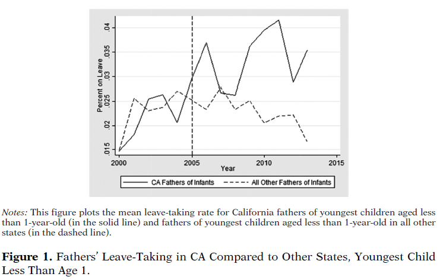
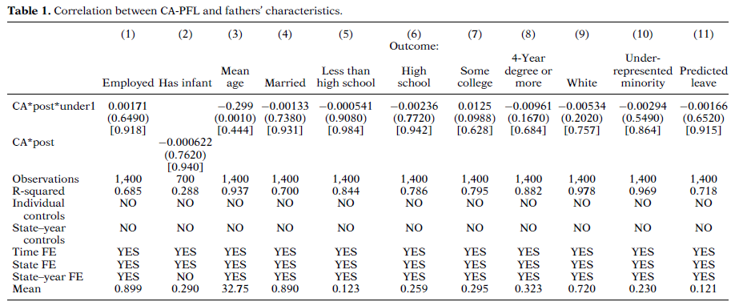
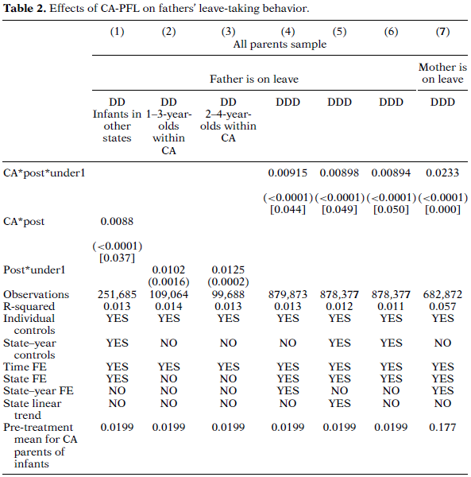
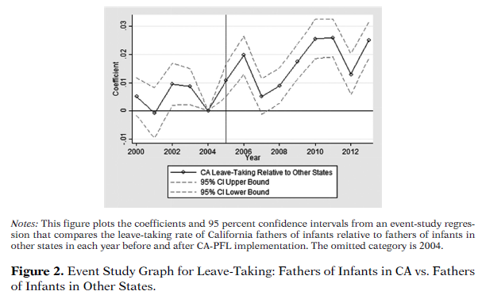
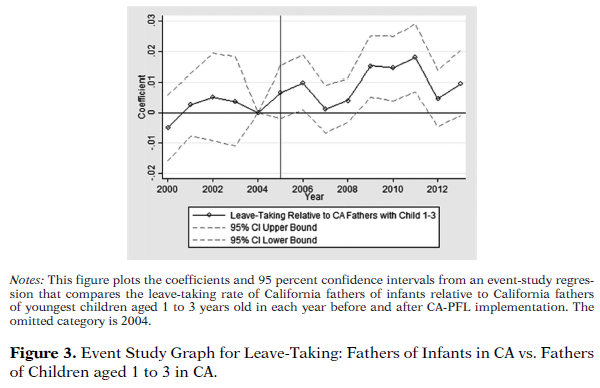
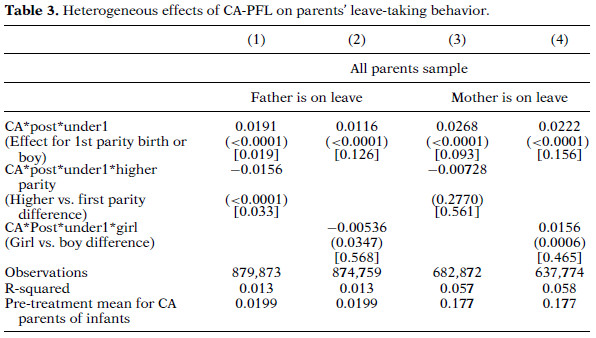
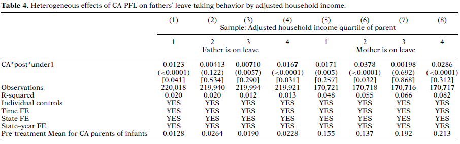
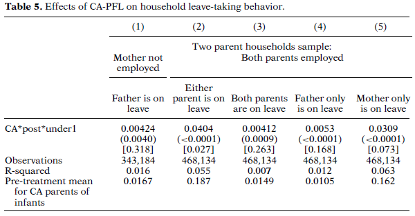
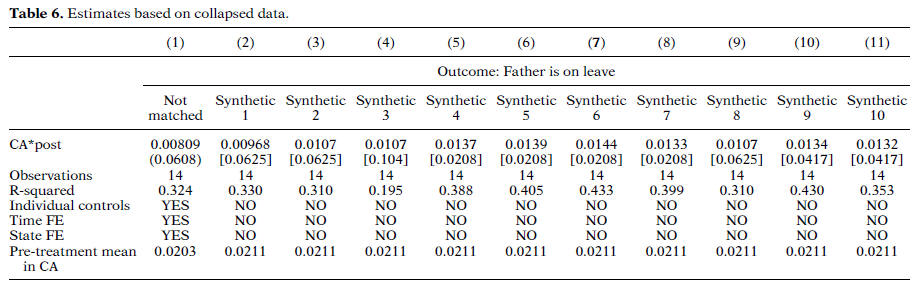

Bartel, Rossin-Slater, Ruhm, Stearns & Waldfogel
Journal of Policy Analysis and Management, 2018
연구 배경 · 동기 · 목적 및 주요 결과 미리보기
선행연구 검토 및 가설 도출
CA-PFL이 맞벌이 가구 내 어떤 형태의 휴직을 증가시킬지는 불분명
데이터 출처 · 종속변수 · 표본 구성 및 한계

Figure 1. Fathers' Leave-Taking in CA Compared to Other States, Youngest Child Less Than Age 1.
이중차분(DD) · 삼중차분(DDD) · 추론 방법 · 식별 가정 점검

Table 1. Correlation between CA-PFL and fathers' characteristics.
주요 결과 · 이질적 효과 · 맞벌이 가구 분석

Table 2. Effects of CA-PFL on fathers' leave-taking behavior.

Figure 2. Event Study Graph for Leave-Taking: Fathers of Infants in CA vs. Fathers of Infants in Other States.

Figure 3. Event Study Graph for Leave-Taking: Fathers of Infants in CA vs. Fathers of Children aged 1 to 3 in CA.

Table 3. Heterogeneous effects of CA-PFL on parents' leave-taking behavior.

Table 4. Heterogeneous effects of CA-PFL on fathers' leave-taking behavior by adjusted household income.

Table 5. Effects of CA-PFL on household leave-taking behavior.
집계 데이터 추정 · 합성 통제 · 플라시보 분석

Table 6. Estimates based on collapsed data.